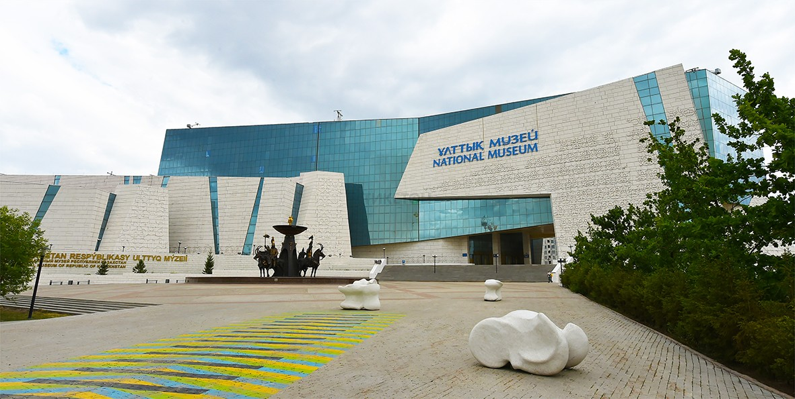

Welcome to the Cultural Gem of Astana
The National Museum of the Republic of Kazakhstan is the largest museum in Central Asia. Located on Independence Square in Astana, it stands as a striking symbol of the nation’s rich heritage, ancient history, and contemporary architectural achievement. The facility spans over seventy-four thousand square meters and houses hundreds of thousands of invaluable artifacts spanning from prehistoric times to modern statehood.
Visitors can explore comprehensive displays ranging from the famous Golden Man of the Saka era to extensive collections of Kazakh ethnography and modern visual arts. The museum provides an interactive educational experience designed to engage students, researchers, families, and international tourists alike.
Quick Overview of Services

Our institution offers guided tours in Kazakh, Russian, and English, research library access, educational workshops, and specialised cultural programs throughout the academic year.